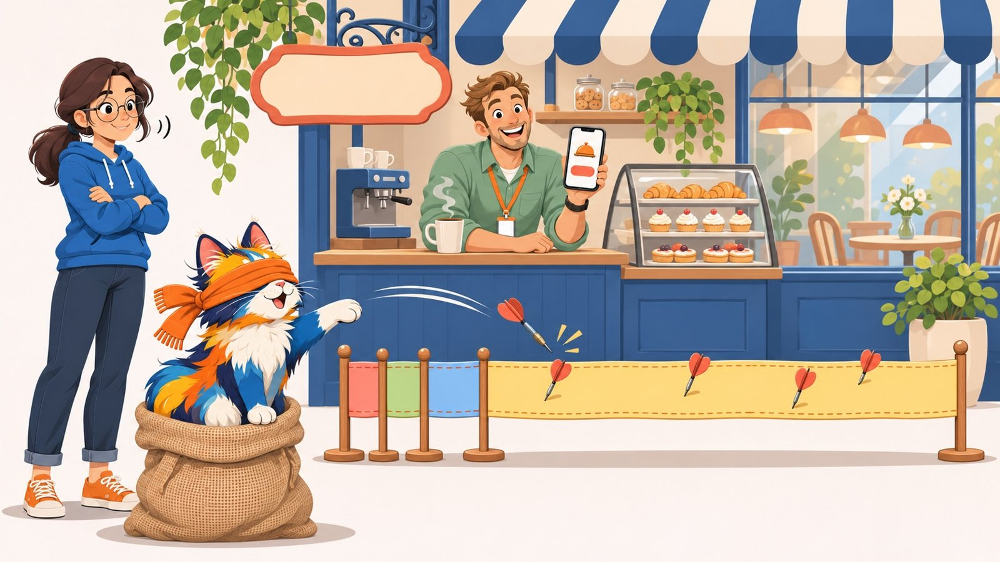

Котейка приходит в случайный момент, а случайный момент чаще лежит внутри длинного интервала: длинный занимает больше времени. Поэтому интервал, в который попадает Котейка, в среднем длиннее, чем средний интервал по расписанию.
Сначала вспомним
Курьеры подъезжают к кафе случайно, интервалы — экспонента со средним 10 минут. Котейка ждёт курьера уже 6 минут. Сколько ему ждать ещё в среднем?
У экспоненты нет памяти: . Прождав 6 минут, Котейка в том же положении, что и в начале: в среднем ещё 10 минут.
Средний чек 640 ₽, медиана 350 ₽: у чеков длинный правый хвост. Какая доля гостей тратит больше среднего чека?
При правом хвосте среднее правее медианы, поэтому выше среднего — меньше половины гостей; у логнормальных чеков с такими параметрами примерно 29 из 100. Это было в главе 6.
Часть II · глава 8
Симпсон, Берксон, ошибка выжившего и автобус
После главы ты сможешь проверить данные на Симпсона, Берксона, выжившего и парадокс инспекции до того, как считать.
Формулы прошлых глав верны, если данные — честная случайная выборка. Но кто решил, какие заказы, гости и автобусы в них попали? В этой главе четыре ловушки, которые срабатывают до всякого расчёта.
- 1. Что здесь случайно?
- 2. Как распределено?
- 3. Центр и разброс
- 4. Насколько шумит среднее
- 5. Сколько стандартных ошибок до порога
- 6. Ответ бизнесу
Глава возвращает нас к первому шагу: какая единица у нас в данных и кто её туда положил.
Сколько ждать автобус?

Котейка
Езжу за молоком на автобусе. На табличке написано: «в среднем раз в 10 минут». А жду, по ощущениям, вечность.

Боб, продакт
Тебе кажется. Приходишь в случайный момент — значит, ждёшь в среднем половину, 5 минут.

Алиса, аналитик
5 минут — если автобусы ходят строго по расписанию. А они ходят как попало: то два подряд, то полчаса ни одного.
Пусть интервалы между автобусами случайные, как время между заказами из главы 6, по экспоненте со средним 10 минут. Сколько Котейка ждёт в среднем, если приходит на остановку в случайный момент?
Котейка ждёт автобус
Средний интервал между автобусами всегда 10 минут. Ползунок меняет только неровность: от строгого расписания до автобусов, которые ездят пачками. Пусти Котейку на остановку 1000 раз в случайные моменты.
Теперь поменяй условие
Интервалы между автобусами за 5 часов; точки — приходы Котейки
—средний интервал между автобусами, мин
—среднее ожидание Котейки, мин
Длинные интервалы ловят чаще

История
В штуках
При экспоненте со средним 10 минут интервалов длиннее 10 минут всего 37 из 100. Но из 1000 приходов Котейка попадает в такие интервалы примерно в 736: они покрывают почти три четверти времени.
Формула
Словами: интервал попадается с весом, равный своей длине. Строгое расписание: T = 10, ожидание 100/20 = 5. Экспонента: , ожидание 10.
Идея из книги: Allen Downey, «Probably Overthinking It»
Лучше везде, а в целом хуже?
Боб, продакт
В ноябре мы поменяли маршруты курьеров. Опозданий стало меньше в центре — с 10% до 8%, и на окраине — с 30% до 25%. В октябре в целом опаздывали 14% заказов. Ноябрь будет рекордным!
Алиса, аналитик
А откуда в ноябре были заказы? Мы ведь открыли доставку в новый спальный район на окраине.
В октябре 80% заказов шли в центр, 20% — на окраину. В ноябре наоборот: в центр 40%, на окраину 60%. Заказов столько же, 1000.
В октябре было 14%. Напиши своё число — на следующей карточке проверим.
Двигай долю заказов с окраины
Опоздания в каждом районе в ноябре фиксированы: в центре 8%, на окраине 25%. Меняется только то, куда шли заказы.
Серые столбики — октябрь, цветные — ноябрь.
Доли опозданий в октябре и ноябре по районам и в целом
Без формул и на предзаказе для постоянных и новичков — в «A/B на пальцах», шаг 10 «Когда зелёное врёт».
Общая доля — это среднее с весами
История
Маршруты стали лучше везде, но заказов стало больше там, где опаздывать проще: на окраине. Общая доля смешивает районы в той пропорции, в какой пришли заказы, а пропорция поменялась.
В штуках
Октябрь: 80 опозданий из 800 в центре и 60 из 200 на окраине — 140 из 1000. Ноябрь: 32 из 400 и 150 из 600 — 182 из 1000. Обе дроби уменьшились, а сумма выросла. Как в первом классе: 1/3 + 2/5 при «сложении как в отчёте» даёт 3/8, а не 11/15.
Формула
Словами: общая доля — среднее долей с весами по числу заказов. Меняются веса — общая доля может пойти против всех частей.
Что делать: сравнивать при одинаковой структуре. Например, пересчитать ноябрь с октябрьскими весами: против 14% — маршруты действительно помогли. А спрашивать, на каком уровне отвечать на вопрос: «стали ли курьеры лучше» — по районам; «сколько заказов опоздало у кафе» — в целом.
Идея из лекций: Joe Blitzstein, Stat 110 — «Симпсон как сложение дробей в первом классе»
Вкусно — значит, дорого?
В сети 300 кафе. Вкус и выгодность цены у них никак не связаны. Но приложение показывает только кафе с хорошим рейтингом, а рейтинг растёт и от вкуса, и от выгодной цены. Двигай порог рейтинга.
300 кафе: вкус и выгодность цены
—связь вкуса и цены во всей сети (корреляция)
—связь среди показанных в приложении
Среди показанных вкусные кафе чаще невыгодные, а выгодные — невкусные: невкусное и дорогое просто не прошло порог. Связь создал отбор, а не мир. Почему связь в данных — ещё не причина, подробно — в курсе по причинности.
Идея из книги: Allen Downey, «Probably Overthinking It» — Берксон с порогом как ручкой
Сколько ждать по журналу интервалов
У тебя журнал интервалов между автобусами за день в минутах. Напиши функцию, которая считает среднее ожидание пассажира, пришедшего в случайный момент. Подсказка: внутри интервала длиной t ждут в среднем t/2, а попадают в него с весом t.
Чек постоянных гостей
Боб, продакт
Я посчитал: у гостей, которые с нами больше года, средний чек 820 ₽, а у новичков — 450 ₽. Значит, кафе приучает гостей тратить больше. Ещё год — и все будут брать по 820!
Что не так в выводе Боба?
В группу «больше года» попали те, кто остался. Если гости с маленьким чеком уходят чаще, у оставшихся чек выше, даже если никто не начал тратить больше. Честная проверка — следить за одними и теми же гостями: как менялся чек каждого от первого месяца к двенадцатому.
Три задачи про «те ли это данные»
Схема ответа одна: переформулируй → посчитай в штуках → запиши формулу → проверь симуляцией → скажи вывод одной фразой.
Мэрия говорит: «в среднем в автобусе 20 пассажиров». Пассажиры жалуются: «вечно битком». Кто прав?
Переформулирую: мэрия усредняет по автобусам, пассажир — по пассажирам. Пассажир видит автобус с весом, равным числу людей в нём.
В штуках: пусть половина рейсов везёт 5 человек, половина — 35. По автобусам среднее (5 + 35)/2 = 20. На пару рейсов приходится 40 пассажиров: 35 из них едут в полном автобусе и только 5 — в пустом. Поэтому средний пассажир видит в своём автобусе человека.
Формула: .
Симуляция: раздай наполненность рейсам, выбери случайного пассажира, а не автобус, и посмотри на его автобус.
Вывод: правы оба: средняя наполненность рейса 20, а средний пассажир едет в автобусе на 31 человека — тем сильнее, чем неравномернее рейсы.
Алиса строит «топ позиций меню по конверсии показа в заказ». Наверху — новый тарт: 3 показа, 2 заказа, 67%. Что не так и как исправить?
Переформулирую: маленькие дают крайние доли случайно, поэтому и верх, и низ рейтинга занимают позиции с малым числом показов — это шум из главы 4, а не вкус.
В штуках: при честной конверсии 10% у позиции с 3 показами 2–3 заказа выпадают в 2.8% случаев; в меню из сотни новых позиций пара таких «звёзд» обычно найдётся. У позиции с 250 показами 30 заказов (12%) шум ±4 п. п.
Формула: сглаживание к средней по меню: , например m = 20, : тарт , позиция 30 из 250 → 11.9%. Простейший вариант — правило Лапласа «+1 заказ, +1 отказ», но при конверсиях около 10% оно тянет к 50% и почти не помогает.
Вывод: ставить порог показов, например от 100, или сглаживать к средней; тогда тарт падает в середину, пока не наберёт показов.
Курьер едет к гостю со скоростью 60 км/ч, обратно — 40 км/ч. Какая средняя скорость за поездку?
Переформулирую: средняя скорость — весь путь, делённый на всё время, а не среднее двух скоростей.
В штуках: пусть до гостя 12 км. Туда 12/60 = 0.2 часа, обратно 12/40 = 0.3 часа. 24 км за 0.5 часа — 48 км/ч.
Формула: v = 2 / (1/60 + 1/40) = 48 — среднее гармоническое. Медленный участок длится дольше и весит больше.
Вывод: 48 км/ч, а не 50: среднее отношений не равно отношению средних — тот же Симпсон с весами.
Четыре вопроса про данные
Доля отменённых заказов упала и у новичков, и у постоянных гостей. Что с общей долей отмен?
Общая доля — среднее долей групп с весами по числу заказов. Веса поменялись — общая доля может пойти в любую сторону. Сначала смотри на структуру, потом на итог.
Опрос в приложении собрал 50 000 ответов «довольны ли доставкой». Случайный обзвон — 500. Чему верить больше?
В опросе отвечает тот, кто захотел, — обычно очень довольные и очень недовольные. Большая выборка сужает шум, но смещение не трогает. У 500 случайных гостей шум больше, зато он честный.
После новой упаковки пришла 31 жалоба на пролитый суп. Это много?
Нужен знаменатель: сколько было заказов с супом, и норма: сколько жалоб было со старой упаковкой на столько же заказов. Ещё важно, не появилась ли кнопка «пожаловаться» на видном месте: тогда жалоб больше без всякого ухудшения.
Котейка приходит на остановку в случайный момент. Автобусы ходят строго раз в 10 минут. Сколько он ждёт в среднем?
Все интервалы по 10 минут, длинных нет: . Парадокс инспекции начинается, когда интервалы разные.
Сначала спроси, откуда данные
- Четыре вопроса до расчёта: кто попал в данные? Кто или что решило, что он попал? Что в знаменателе? На каком уровне мы отвечаем на вопрос?
- Парадокс инспекции: случайный момент чаще попадает в длинный интервал. ; при экспоненте — целый интервал, а не половина.
- Симпсон: . Все части могут улучшиться, а итог ухудшиться, если сменились веса. Сравнивай при одной структуре.
- Берксон: порог отбора создаёт связь, которой нет во всей совокупности. Смотри, кого не показали.
- Ошибка выжившего: в «постоянных» остались те, кто не ушёл. Следи за одними и теми же людьми во времени.
- Большая выборка уменьшает шум, но не смещение.
- Парадокс инспекции
- объект попадает в выборку с весом своего размера: длинные интервалы, полные автобусы; inspection paradox, length-biased sampling
- Парадокс Симпсона
- связь в каждой группе и в сумме направлена по-разному из-за смены весов групп; Simpson's paradox
- Смещение отбора
- правило попадания в данные искажает картину; частный случай с порогом — парадокс Берксона; selection bias
- Ошибка выжившего
- в данных только те, кто «дожил»; survivorship bias